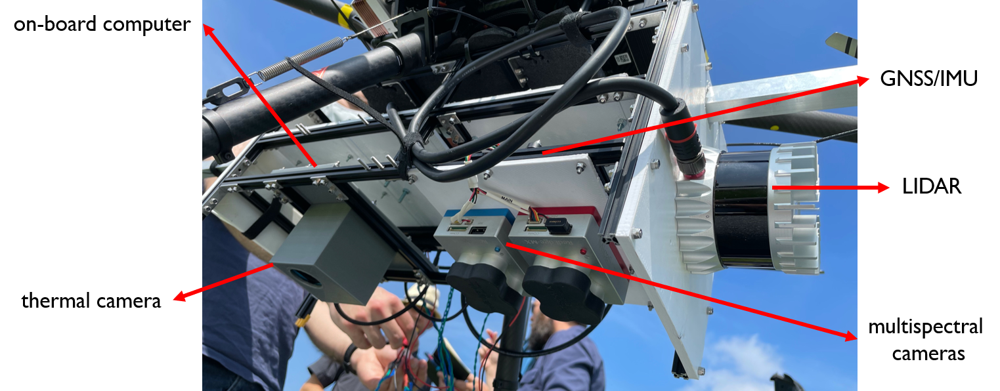
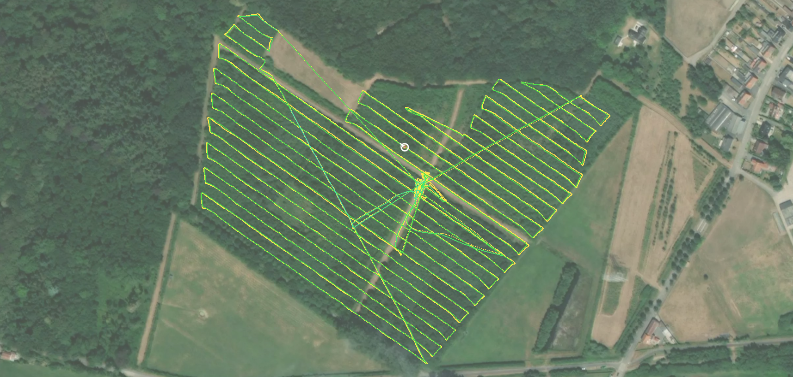
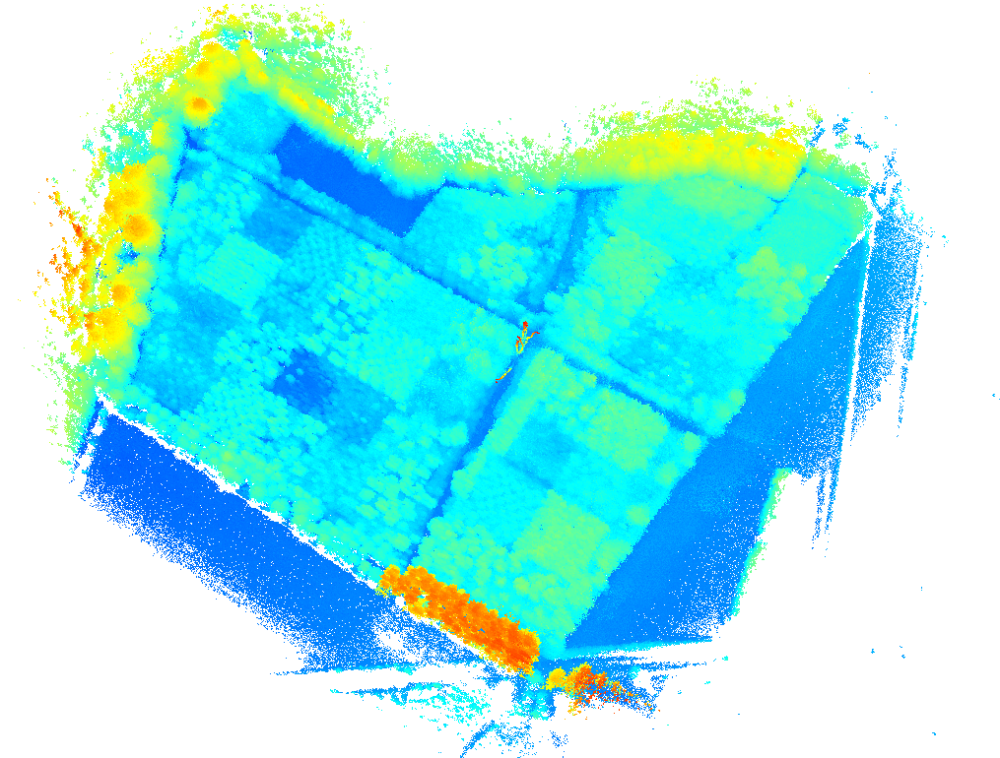

Sensor fusion for UAV applications
UAVs are often employed as measuring/monitoring device: e.g., in precision agriculture (the need for observing the inter- and intra-variability in crops) or in infrastructure inspection (the need for detecting defects such as corrosion or faults that were not built as planned). In this research, we bridge the gap between LiDAR and traditional imaging (e.g., RGB, multispectral and thermal), two complementary technologies. This combination will allow us to extract data and relate this to variables relevant for different UAV applications, where we can benefit from data coming from both the spectral as well as the 3D spatial (and even temporal) dimensions.
 Figure 1: The UAV sensor rig consisting of a LIDAR scanner, thermal camera, multispectral cameras and a GNSS/INS system.
The technology is a combination of a fully synchronized multimodal UAV rig and an associated sensor fusion processing pipeline that produces highly accurate, georeferenced and multispectral point clouds. From a research point of view, we developed several state-of-the-art algorithms in the field of multi-modal calibration, point cloud registration, 2D to 3D matching, depth completion, spectral and spatial corrections and optimal scanning strategies.
The combination of lidar (3D spatial information) and traditional imaging (RGB, thermal, multispectral) was never used to its full potential because not all the required techniques on calibration, registration, corrections, optimal scanning strategies etc. were fully optimized. As such, the generation of multispectral point clouds remained imprecise or sub-optimal so far. In our research, we aim at making the most of technology by adopting a completely holistic approach, able to generate multispectral point clouds with unprecedented accuracy and detail.
 Figure 2: The trajectory of the drone at a measurement campaign at Vloethemveld in Zedelgem.
 Figure 3: The resulting point cloud for the measurement campaign at Vloethemveld in Zedelgem.